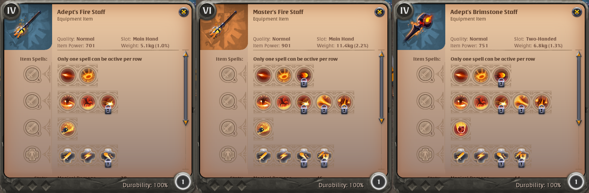

After you have completed the tutorial, you should only have access to tier 2 equipment. In Albion, most mechanics work in "tiers", ranging from tier 1 to tier 8. Sometimes however, lower tiers may be irrelevant or work differently, and that is the case for weapons, where tier 1 is irrelevant.
Open your destiny board (default key: B). Everything weapon-related will be on the left side of the board, following yellow lines. The first node you will encounter is "Trainee fighter", the one giving you access to tier 2 equipment. There, you can already see the main "divisions" of albion equipment: Warrior (the Sword), Hunter (the Bow), Mage (the Fire Staff) for weapons, and the 3 sets of armor: Plate, Leather, and Cloth (for each, you will have a Head, Body, and Shoes). Additionally, you also have access to a Tome of Spells and a Shield. Some weapons are one-hand (abbreviated 1H), some are 2-handed (2H). For 1H weapons, you can use an off-hand, such as the shield or the tome. You may already have noticed that all weapons have 3 spells (Q, W, E) and passives. All armor pieces have one spell and passives as well.
Once you start using one type of equipment (say, the Fire Staff), you will start unlocking the Tier 3. Tier 3 (at least for weapons) will give you access to more item types. Let's stick to the Fire Mage for this tutorial, once you reach T3 (after getting enough fame by killing mobs), you unlock 6 new items: the Arcane staff, Cursed Staff, Fire Staff, Ice Staff, Holy Staff, and the Tome of Spells. Same goes for Hunter and Warrior, who unlocked new weapons and one new offhand type. These will be the main weapon categories for the rest of the game.
Using those T3 items, you can now start unlocking the T4 items. This is where the game really starts. You will now unlock a bunch of new weapons within the same category. Continuing with our Fire Staff, we now have a bunch of new Fire Staffs to use. These weapons have the same Q and W pool, but they all differ with their E. Each weapon variant has a unique E.
Outside of the tier system, weapons and equipment also have some "crafting variation" so to say. You will find "normal equipment", which is only build with basic ressources. For weapons they usually come in 1 hand (1H) and 2 hands (2H) variants, and for armor you will find 3 variants.
On top of that you will find "artifact weapons", which also require an artifact you craft. Artifacts come in 3 levels of "rarity", with "rune", "souls", and "relic" variants, in progressing order of rarity, and as such, cost.
There is also the "avalonian artifacts", crafted from avalonian shards found in the Roads of Avalon. Armor also have 2 additional levels: Royal Armor, requiring Royal Sigils obtainable in expeditions, and Mist Armor, found in the Mists.
As said above all the weapons of a give category have the same Q/W pool, but the entirety of the pool is not available from tier 4 for the "regular weapons". However, due to their cost and rarity, artifact weapons may have everything unlocked from T4 already. Regardless, you have access to the entirety of the pool from tier 6 onwards. Here, you can see a comparison wetween a T4 1H Fire Staff, a T6 1H fire Staff, and a T4 Brimstone Fire Staff.
You may see that some spells have a padlock. To unlock them to your pool, you will have to level up, in this case level up your Fire Mage tree. In this case, the second W is unlocked at lvl 3, the second passive at lvl 6, etc...
In Albion, the power of an item is determined through its "Item Power". The higher it is, the more damage you will deal, the shorter your cooldown will be, etc... There are multiple ways to increase your Item Power. The first and most obvious is to get higher tier items. You get 100 IP per tier. A T4 staff is 700IP, a T5 800IP, etc...
The second way to increase your IP is to have better quality items. When an item is built, it also has a quality, which depends on the crafter and is RNG-based. Normal quality gives 0 IP, Good is +20IP, Outstanding +40, Excellent +60, Masterpiece +100. Quality can be seen through the frame of the item. You can also improve the quality of an item at the repair shop, we'll get back to it later.
The third method to increase your IP is enchantments. It's basically an addition to your tier. You have 4 levels of enchant: 0, 1, 2 and 3. It is common to refer to the enchant as "point", T4.1 for exemple. Enchants are for T4 items and above. Crafting those usually require similarly enchanted ressources you can find in the wild (T4.1 metal, etc...) but we'll talk about that in another tutorial. Each enchantment level adds 100IP. They often happen to be cheaper than an above-tier gear. For exemple a T4.1 1H Fire Staff has the same IP as the T5, but costs less money! Don't forget, however, that you may not have all the spells in your spell pool. Sometimes the market fucks up a bit, and enchanted gear costs the same, or less, than lower-enchants. Always checks the price of enchanted gear in comparison, you might get a lot of IP for free!
Finally, the last method to increase your IP is through levelling up and specialization. This is the grindiest way to increase your IP, but in PVP, a small percentage can make a difference. First of all, levelling up in your item category will give you bonus IP. For exemple, you get 0.2 IP per level of Pyromancer (Fire Mage) for all Fire Staffs. The second one is through the dreaded specialization. Those are the last nodes of your Destiny Board, on the extremity. Here, each WEAPON has its own spec. No more "Fire Staffs" in general, but 1H Fire Staff, 2H Fire Staff, Infernal Staff, etc... You still get +0.2 IP for all Fire Staffs per level, but more importantly, +2IP per level for the exact weapon type you chose. The levels of specialization also require significantly more XP than the "generalist" node before. This is Albion's way to incentivize you to only play a handful of weapons, and not everything at once: the more you use a single type of weapon, the more IP it will have. While you may easily get all T4 weapon types in a few days or even hours, and possibly all weapon types to level 100 at some point, it is simply impossible to spec up all weapons individually.
Overcharge is also a possibility. You gain 100 Item Power for 30 minutes, but have a 15% chance of your item being permanently destroyed afterwards. Using Overcharge requires Siphoned Energy, an expensive ressource produced in BlackZones.
As you use your items, take damage, etc... Your item durability will degrade. Being "downed" (downed by mobs, or "killed" in yellow zones/duels/etc...) will also decrease all your items (including in the inventory!) by 5%. To repair your items, you can go to a repair station. You can find a repair station in every city, you can build one on your guild island/personnal island, find one in Faction Warfare castles, etc... Regardless of the method, repairing your gear will cost you money, which will depend on the item value and the level of damage it has taken. Make sure you can afford to repair your gear! Also take note that you cannot sell an item whose durability (if it has one) is not at 100%.
The repair station also allows you to salvage equipment, giving you some components back as well as some silver, but we won't dive into that here. The 3rd option at the repair station allows you to "Reroll quality". In exchange for silver, you can reroll items and hope for a better quality. It will show you the probabilities of the outcome. The price increases with Item Value and quality. Note that the reroll cannot decrease your quality, only improve it or keep the quality the same.
Levelling up, especially at higher levels, can take a lot of time. To level up faster, different methods exist, but they obviously have drawbacks.
The first method is obviously to farm in higher tier areas. Killing mobs in a T5 zone will give you more fame than in a T4 blue zone. Higher tier mobs will also give you higher tier rewards. "Tougher mobs" will give you tougher rewards, etc... Occasionally, you might find "mini bosses" in the wild that give decent fame (about twice that of a regular "tough" mob) for not much effort. Blackzones and Roads of Avalon are the best place to fame up quickly, but you are of course at risk of dying and losing your equipment.
Another method to level up is to use learning points. You get 30 points per day with premium, but can also get 10 points per day if you complete the Daily Challenge if you don't have premium. When you are at 20% of a level, you get to "learning point". If you so wish, you can spend learning points to finish the level. The cost will be higher if you try levelling up things that require a lot of fame. The amount of learning point also varies with the percentage of the level already done: at 50%, you're gonna spend fewer learning points than at 20%. On your destiny board, you can choose to "auto-learn" the desired skill, so you don't have to do it manually each time, but don't forget to turn it off if you wish to save LPs.
You can also use tomes of insight. You can get those books in a lot of different ways: rewards, chests, drops, on the market, etc... When you use a tome of insight, you get fame for all the gear you currently wear. MAKE SURE YOU ARE WEARING THE DESIRED EQUIPMENT. You can get a free T4 tome of insight every day with the daily challenge, but this one cannot be sold.
Albion Online and all associated designs, logos, and images are the intellectual property of Sandbox Interactive.